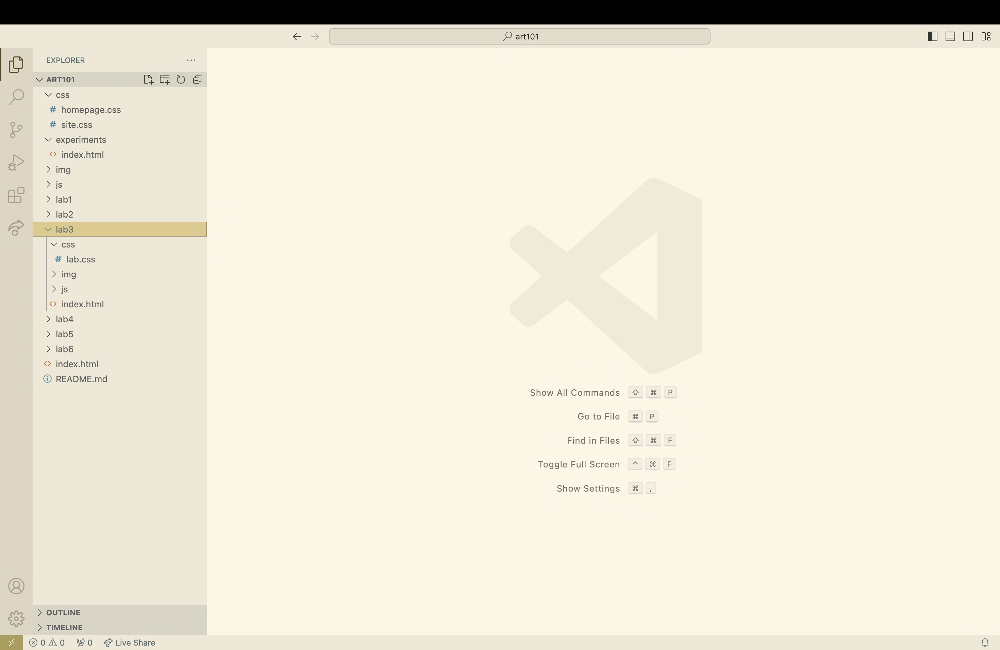

₊ ⊹ Lab 3 - File Structure and File Transfer ₊ ⊹
Challenge
The purpose of this lab was to create a local file structure on my computer, add index.html files and upload to the server.
Problems
I didnt have any problems creating a local file structure because I installed a template(from modes). I did have a hard time with my image on the homepage because I didnt upload it correctly but once I did, it appeared on my homepage.
Reflection
This assignment was not too hard, I just edited what I already had.
Results
This is the index.html I edited and this is my file structure:
